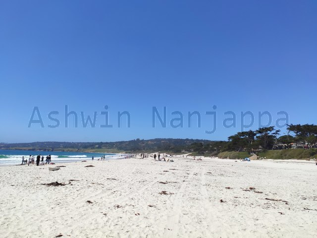

Carmel-by-the-Sea
is a quaint touristy town with a beach that lies to the South of the SF
Bay Area. We did a day trip on a recent weekend and it was good fun for
the family.
Drive: The drive took about 2 hours from Santa
Clara.
Food: The town had lots of restaurants and beer
places. It had a nice European feel with outdoor dining. But due to
COVID we decided not to risk it and instead drove to nearby Del
Monte Shopping Center which has lots of sandwich, pizza and
fast food options to have food to go and eat in our car. It also has
restrooms in every building, so useful when traveling with kids.
See: The entire touristy area of the town is laid
out in a 5x5 street grid. It is mostly filled with all sorts of quaint
art, craft and painting stores and studios, along with restaurants. It
is quite nice to walk around this grid and look at stuff and buy
something artsy for decorating the home. At the periphery of this grid
are the lodges and hotels for tourists staying overnight.

Carmel beach
Carmel beach: A beautiful beach lies to the West of
the town, a short drive away. There is parking right next to the beach,
but we had to drive around quite a bit on this summer Sunday afternoon
to find an empty spot. The beach is quite big and the fine white sand is
really nice. The sand is good for kids to play with sand toys. The water
here has a beautiful green-blue color and is clear. The water is cold
though, as the Pacific usually is at this latitude. We found some folks
with surfboards using the waves. Though the sand was warm, since it was
summer, the breeze from the ocean was a bit chilly.
Carmel-by-the-Sea is a perfect day trip for folks living in the SF
Bay Area.